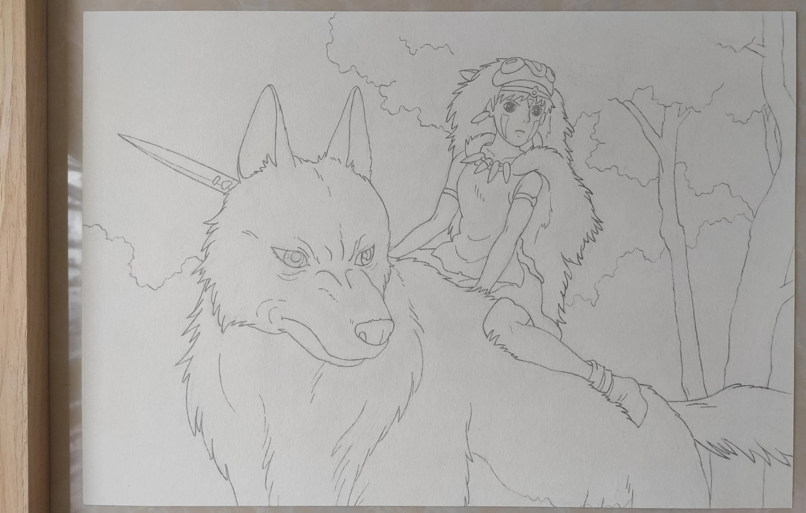

画室
—— 这里是我的画室，或者应该称之为画廊？喜欢画画，同时也喜欢二次元。
这个画室里收藏着我的几件作品。水平有限只能完成铅笔稿。希望大家喜欢。
#. 1—— 2023.8.16
 第一幅作品！「千と千尋の神隠し」中的场景。
第一幅作品！「千と千尋の神隠し」中的场景。
专门选了一幅简单的来尝试。
#. 2—— 2023.10.1
 「もののけ姫」第一次尝试复杂的人物绘画。经过再三调整后，总感觉还有点小毛病...
#. 3—— 2024.2.24
「大神ミオ」，
由画师泉彩设计。右图为 LUZZI 创作的原图。
Safebooru 上的意外收获。历经四个月的漫长创作后，我完成了它！这是目前最有挑战性的作品。